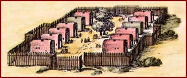

Agenda of the Great Council
Events scheduled for the Great Council include:
Raising up a new Oneida councilor.
The
sachems
will smoke the long pipe and talk of the recent death of the council representative from the
Oneida Turtle clan. After the opening ceremony, the Council will
raise up the new chief

of the Turtle clan, who has been chosen by his clan's
elder women.
Mourning the death of the Oneida chief
For the Oneida people, the councilors will perform the condolence ceremony, offering
words that will help wipe tears from eyes so that the mourners may see clearly, clear
ears so that the mourners may once again have good hearing, and clear throats so that
the mourners may speak and breathe freely.
Making peace with the French
The councilors will discuss a proposal to send messengers to the governor of
New France
to seek a peace treaty. In recent years, hundreds of our people have died in
wars
with the French and their Indian allies. A peace agreement could end these troubles.
As usual, all warriors are invited to participate in athletic games of strength and skill.